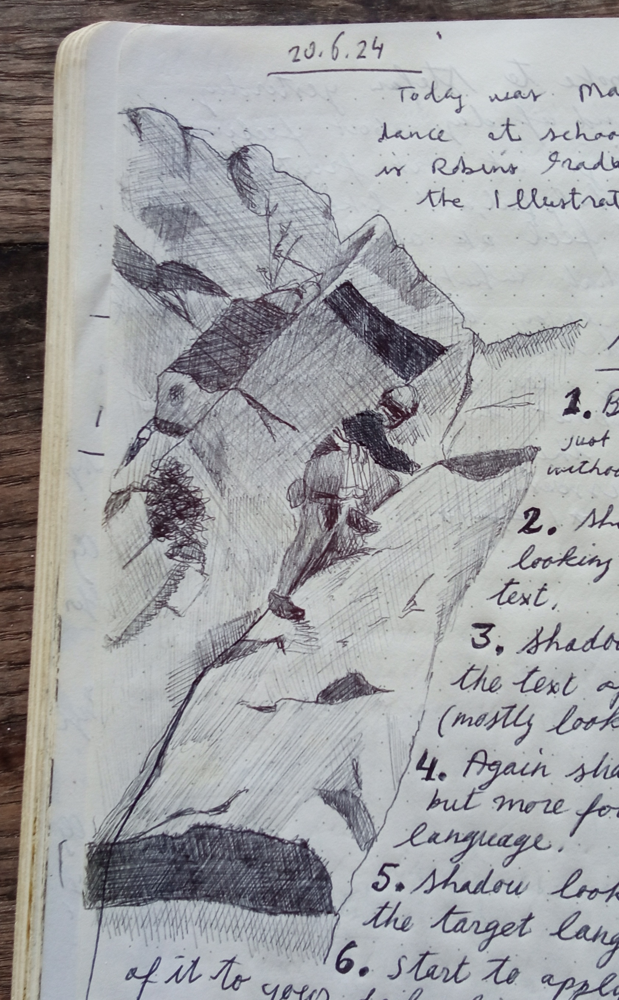
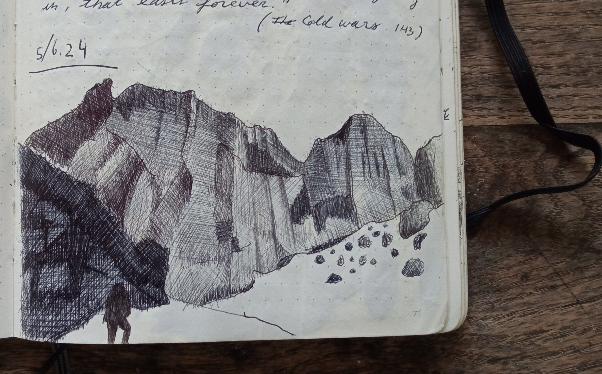

I used to draw from references, but this year I’ve started drawing from imagination. I realised that there is so much recorded in my head, that I don’t need to look at in order to imagine completely. There is quite a way to go still, I mostly can’t say that I am happy with the drawings, but the issue isn’t proportions or correctness of details and shading, mostly the issue is that I don’t understand where those images came from, some of them are right down embarrasing, all of them are strange, more about that later, in this letter I will say goodbye to some drawings made with references, either photograps I took, or photographs in books.
Al Andalus
A similar idea I am trying to develop with music, with playing guitar. The equivalent skill in playing an instrument will be to be able to play at one’s whim. To imagine a tune and play it, to play as if you are speaking, mastering the instrument as one masters their voice.

Alternative route
I don’t know why I started to draw with ballpoint. I think it was Sophie that said that I should try ballpoint, that it is a simple, cheap, and common tool, and that it is possible to get really nice results. basically a niche. Sounded attractive. Took me a couple of years to find out that there is actually a valid shading technique, and that practice makes perfect, and to be honest, I never developed the really patient attitude and practice that some much worthier artists than myself master.

of Cold Wars
So as I mention above I use my memory now and not references, generally that is, it is not a strict rule. Looking through my older notebooks I put together the mountain drawings, Rocks.
Rocks and memory. I climb. My climbing companions as a rule remember the rock better than me. Climbers seem to be keen to give the beta to other climbers when they notice that they struggle or hesitate. So me with the poor rock memory, I look at the rock alot, and feel it alot, and get shouted from up or down: “there’s a good foot just to the left of your knee” or just get a bit higher and you’ll find a bomber hold on the right", or “number 4 fits in the crack under that bulge” and so on… I am happy to climb the same route, every time it is different for me, everytime it is new. I might try mapping out a route, for art, or for utility, to get familiar, to see what they see. till now I drew those from reference, perhaps now I could draw from imagination, which is also a kind of a memory.

{kind=link}
{kind=link}
{kind=link}
{kind=link}
{kind=link}
{kind=link}
{kind=link}
{kind=link}